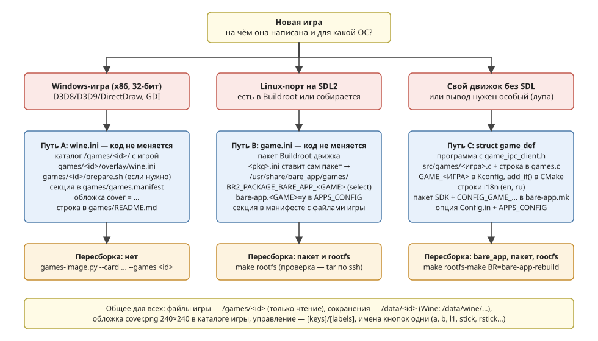
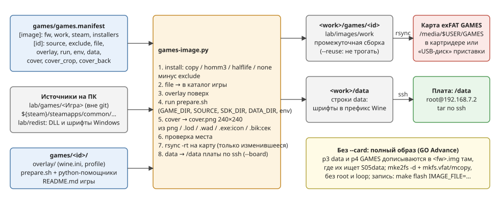

5. Добавление новой игры

Сначала ответьте на три вопроса: на чём написана игра (путь A/B/C), где
её файлы на ПК (lab/games/<Игра> или библиотека Steam) и что она пишет
(сохранения, настройки — они должны попасть на /data). Дальше — по пути.
Путь A: Windows-игра под Wine (GO Ultra)
Ничего не собирается. Нужны: каталог игры на карте, wine.ini, секция в
манифесте, обложка.
1. Положить игру в lab/
lab/games/<Игра>/ — установленная на Windows (или распакованная innoextract)
игра как есть. Инсталляторы и переводы остаются в /media/D/Games/Install
(${installers} в манифесте), игры Steam — в библиотеке Steam (${steam}).
2. Написать games/<id>/overlay/wine.ini
Возьмите за основу ближайшую игру (games/templar/overlay/wine.ini — простая
D3D8-игра, games/pop/overlay/wine.ini — стики как WASD и мышь,
games/hota/overlay/wine.ini — курсор и прокрутка карты) и образец со всеми
ключами apps/bare_app/ports/wine/wine.ini. Минимум:
name = Моя игра
hint = A клик B Esc F5 свернуть F6 (держать) выйти
hint.ru = A клик B Esc F5 свернуть F6 (держать) выйти
exe = Game.exe
mode = 800x600
scale = aspect
locale = ru_RU
writable = Save, config.ini
env = BOX64_DYNAREC_BIGBLOCK=3 BOX64_DYNAREC_CALLRET=1
[keys]
stick = mouse
rstick = wheel
dpad = arrows
cursor_speed = 0.8
a = lbutton
b = esc
x = enter
y = rbutton
f1 = esc
[labels.ru]
stick = курсор
a = клик
Что решить на этом шаге:
mode. Начните с 800×600: на 854×480 это почти ширина 1:1 приscale = fillили аккуратные поля приaspect. 1024×768 обычно медленнее и мельче. Если игра знает только 800×600 и интерфейс внизу — смотритеrowsи пример Neighbours from Hell (games/neighbours/prepare.shперекладывает интерфейс в верхние 480 строк, сам буфер игры не трогая).writable. Всё, что игра пишет в свой каталог (Save,*.cfg, профили). Проверяется только запуском с/gamesтолько для чтения — так, как у пользователя. Карта в режимеrwоднажды скрыла записьMSSSOFT.M3D, ломавшую Gothic.- Мышь. Если курсор в меню «ползёт» или клик промахивается — игра читает мышь
через DirectInput:
mouse = relative. - Шрифты и DLL из Windows. Если игре нужны
d3dx9_41.dll, OpenAL изSysWOW64или шрифты Arial/Palatino — они берутся изlab/redist/строкамиfile(в каталог игры,dlls = x=n,b) иdata(шрифты в префикс на/data).
3. При необходимости — games/<id>/prepare.sh
Запускается games-image.py после копирования с переменными GAME_DIR,
SOURCE, SDK_DIR, DATA_DIR и env из манифеста. Правит файлы игры под
приставку: разрешение в её настройках (HotA), русификация дельтами (PoP),
перекладка интерфейса (Neighbours), сборка лаунчера poplaunch.exe
кросс-компилятором llvm-mingw из output/ogu/buildroot/host. Скрипт должен
быть идемпотентным: rsync переносит на карту только изменившиеся файлы, и
повторный запуск не должен переписывать всё заново (touch -r оригинала у PoP —
именно для этого).
4. Секция в games/games.manifest
[mygame]
; Моя игра (2004), русское издание 1С, Wine. Что исключено и почему
source = lab/games/MyGame
exclude = unins000.*
exclude = *.url
exclude = Manual.pdf
file = lab/redist/SysWOW64/D3DX9_41.dll
overlay = games/mygame/overlay
run = games/mygame/prepare.sh
env = SOMETHING=${installers}/MyGame/patch.exe
data = lab/redist/Fonts/arial*.ttf -> wine/prefix/drive_c/windows/Fonts/
cover = lab/games/MyGame/Game.exe:icon
cover_crop = fit
Ключи — games/README.md. Пути без / — от корня SDK;
${steam}, ${installers} — из [image]. Исключайте деинсталляторы, логи,
остатки GOG, *.lnk, сохранения с ПК и дубли (RTCW: только нужные pk3, 0,95 ГБ
вместо всего).
5. Залить и проверить
scripts/games-image.py --card /media/$USER/GAMES --reuse --games mygame --board root@192.168.7.2
scripts/ogu-ctl.py launch:mygame wait:30000 shot:/tmp/m.png
scripts/ogu-ctl.py wfmove:400,240 wclick wkey:esc quit-game
--reuse не пересобирает остальные игры, --board кладёт строки data на
/data по ssh. Карта — в картридере или через экран «USB-диск». Смотрите
/var/log/bare_app.log на плате: туда идёт вывод Wine. Первый запуск после
пересборки Wine падает один раз и может сбросить настройки — это известно.
6. Записать
Строка в списке игр games/README.md, games/<id>/README.md с тем, что
пришлось выяснить (у Monkey Island, Templar, PoP такие есть), при необходимости —
абзац в apps/bare_app/README.md. Коммит — SDK (games/) и, если трогали
мост, apps/bare_app.
Путь B: SDL2-игра
B1. Движок есть в Buildroot (Chocolate Doom)
Четыре правки, ни одной строки кода:
board/common/buildroot/package/bare-app/games/<игра>.ini— описание;- опция в
package/bare-app/Config.in:kconfig config BR2_PACKAGE_BARE_APP_CHOCOLATE_DOOM bool "Chocolate Doom (an SDL2 game by its game.ini)" depends on BR2_PACKAGE_BARE_APP_SDL select BR2_PACKAGE_CHOCOLATE_DOOM select BR2_PACKAGE_SDL2_MIXER select BR2_PACKAGE_DOOM1_WAD - строка в
bare-app.mk:BARE_APP_GAME_INIS-$(BR2_PACKAGE_BARE_APP_CHOCOLATE_DOOM) += chocolate-doom.ini; APPS_CONFIG += bare-app.CHOCOLATE_DOOM=yв конфиге прошивки.
B2. Свой пакет движка (DOOM 3 BFG, RTCW, новая игра)
- Пакет
board/common/buildroot/package/<pkg>/:Config.in,<pkg>.mk,<pkg>.hash, патчи;sourceвboard/common/buildroot/Config.in. Зависимости от Mesa объявлять в самом пакете (iortcwкогда-то полагался наbare-app.mk). - Описание —
games/<id>/overlay/game.iniв SDK, а не в пакете: его кладёт на карту вместе с файлами игрыscripts/games-image.py(overlay = games/<id>/overlayв секции манифеста). Так пункт меню появляется и пропадает вместе с игрой, а исправить описание можно без нового rootfs. Пути в нём — относительно каталога игры:needs = base/data.pak,args = --data {dir}. (Игра, целиком лежащая в образе, может ставить<pkg>.iniв/usr/share/bare_app/games/хуком пакета; описание с тем же именем на карте всё равно главнее.) - Опция
BR2_PACKAGE_BARE_APP_<GAME>вpackage/bare-app/Config.inсdepends on BR2_PACKAGE_BARE_APP_SDLиselect BR2_PACKAGE_<PKG>. APPS_CONFIG += bare-app.<GAME>=y,make rootfs.- Секция в манифесте с файлами игры (
install = none+file = … -> main/, как у[rtcw]),overlayсgame.ini,cover— картинка дляcover.png.
В game.ini: keys — для игр без контроллера SDL; gamepad — если движок ждёт
другую раскладку (f1=start, f4=back); scale = fit; fps = 0, если движок
сам держит темп; gyro — для шутеров. В [env] можно SDL_RENDER_DRIVER =
software (на OGA чтение кадров GPU медленнее, чем программный рендер) и
SDL_LOGGING = video=debug для отладки драйвера. Не ставьте SDL_VIDEODRIVER.
Проверка без перепрошивки:
T=output/ogu/buildroot/target
tar -C $T -cf - usr/bin/mygame | ssh root@192.168.7.2 'tar -C / -xf -'
tar -C games/mygame/overlay -cf - . | ssh root@192.168.7.2 \
'mount -o remount,rw /games && tar -C /games/mygame -xf - && mount -o remount,ro /games'
scripts/ogu-ctl.py launch:"My Game" wait:20000 shot:/tmp/s.png
Главный экран заметит новую игру сам (каталоги игр проверяются раз в 2 секунды).
B3. Linux-игра x86_64 под Box64 (UT2004)
Старые Linux-порты (Loki, icculus) — x86/x86_64 на SDL 1.2. Их запускает Box64
(пакет box64), SDL 1.2 даёт sdl12-compat поверх SDL2 с драйвером bareapp,
OpenAL и GL Box64 берёт системные. Нужно:
- пакет-стартер (как
package/ut2004): скрипт в/usr/binс HOME в/data/<id>,SDL_VIDEO_GL_DRIVER=libEGL.so.1,BOX64_PREFER_WRAPPED=1(игра может звать свою./libSDL-1.2.so.0— её не ставить), файл OpenAL Soft с устройством изAUDIODEV; опцияbare-app.<GAME>=yсselect BR2_PACKAGE_BOX64,BR2_PACKAGE_SDL12_COMPAT,BR2_PACKAGE_OPENAL; - установщик или секция манифеста с файлами игры,
game.iniв overlay; - управление: если у игры есть свой джойстик SDL 1.2 — стики через него (оси
SDL идут по порядку: левый X/Y, правый X/Y, триггеры), кнопки — клавишами через
keys, аgamepad = … =noneубирает их из джойстика, чтобы не было двойных нажатий.
B3. Готовая программа на карте, без пакета
/games/mygame/
game.ini exe = mygame, dir = {dir}, needs = data
mygame собрана тулчейном SDK (output/ogu/buildroot/host/bin/aarch64-…-gcc)
data/
Писать в свой каталог программа не сможет: HOME — /data/mygame.
Путь C: игра со своим движком
Кратко; полный пример с кодом — GAMES.md.
Сторона игры. Включить games/game_ipc_client.h и core/input.h
(в Buildroot — $(STAGING_DIR)/usr/include/bare_app/, пакет зависит от
bare-app). Цикл: game_link_open() → poll на fd 3 → game_link_recv()
кнопки и оси → нарисовать в game_link_frame() (размер app.shm->width ×
height, строка stride) → game_link_publish(). Кадры, которые не изменились,
не публиковать (или слать GAME_FRAME_SAME). Выход с кодом 0 — нормальный;
SIGTERM — закрыть.
Сторона bare_app (apps/bare_app):
| Где | Что |
|---|---|
src/games/mygame.c |
struct game_def game_mygame с missing() (проверить программу и данные) и start() (окружение через game_vars_add, game_proc_start(&spawn)) |
src/games/games.c |
extern + &game_mygame, под #ifdef CONFIG_GAME_MYGAME в порядке меню |
Kconfig |
GAME_MYGAME с select GAMES, GAME_MYGAME_PROGRAM и пути данных |
CMakeLists.txt |
add_if(CONFIG_GAME_MYGAME src/games/mygame.c) |
src/gui/view/core/i18n.h, i18n.c |
S_MYGAME, S_MYGAME_HINT на английском и русском |
configs/ogu_defconfig, oga_defconfig |
CONFIG_GAME_MYGAME=y для сборки без Buildroot |
src/platforms/*.c |
при необходимости "mygame.ключ=значение" в game_opts (как homm3.view=fit) |
Сторона SDK: пакет движка; CONFIG_GAME_MYGAME=$(call BARE_APP_YN,$(BR2_PACKAGE_BARE_APP_MYGAME))
в BARE_APP_KCONFIG файла bare-app.mk; опция в package/bare-app/Config.in;
APPS_CONFIG += bare-app.MYGAME=y. Пересборка: make rootfs-make BR=bare-app-rebuild && make.
На ПК протокол гоняет ctest (game_smoke с tests/fake_game.c); игру можно
запустить в симуляторе -p pc-mem с BARE_APP_NATIVE_DIRS.
Манифест и карта: как это работает

scripts/games-image.py --card собирает игры в lab/images/work/games/<id>
(install → exclude → file → overlay → run → cover), проверяет место и
rsync -rt переносит на карту то, что изменилось по размеру или времени.
Каталоги на карте, которых нет в манифесте, не трогаются; --delete чистит
лишнее внутри каталога игры. Без --card получается полный образ для
прошивок с разделом игр на том же диске (GO Advance): p3 и p4 дописываются в
<fw>.img там, где их ищет S05data, без root и loop-устройств.
Данные игр с ПК для Героев и Half-Life копируют не целиком, а только то, что
читает движок: install = homm3 и install = halflife вызывают
scripts/homm3-install.sh (Data, Maps, Mp3 + моды VCMI из dl/hota) и
scripts/halflife-install.sh (valve, valve_russian).
Чек-лист перед коммитом
- [ ] игра запускается из меню с
/gamesтолько для чтения и после «холодного» старта (новый префикс Wine, пустой/data/<id>) - [ ] сохранение и загрузка работают, файлы оказались на
/data - [ ] F5 сворачивает и возвращает, F6 закрывает, выход через меню игры — код 0
- [ ]
hint.ruи[labels.ru]заполнены, экран «Управление» показывает подписи - [ ]
cover.pngквадратная и не «мыльная» (240×240 из картинки не меньше) - [ ] FPS посмотрен монитором (F5 удерживать) и записан в README игры
- [ ]
games/README.md, манифест,games/<id>/README.mdобновлены - [ ]
prepare.shидемпотентен, повторныйgames-image.py --reuse --games <id>ничего не переписывает